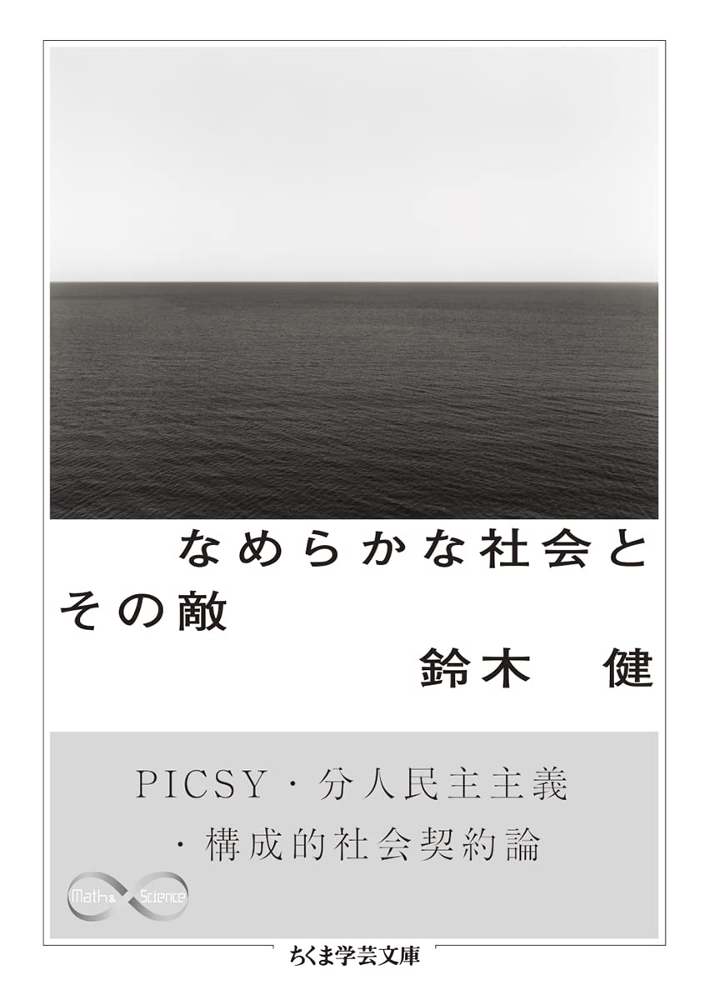

SHUJI
Junior Engineer
Scroll Down
About Me
エンジニア志望の学生です。
IT技術による社会構造の変革を夢見て、スキル習得に励んでいます。
興味のある技術

Favorite Books

なめらかな社会とその敵
300年先を見据えた社会構想。複雑な世界を、複雑なまま生きることはいかにして可能か――。
他者といる技法──コミュニケーションの社会学
マナーやかげぐち等、他者といる際に用いる様々な技法。 そのすばらしさと苦しみの両面を描く。
人間非機械論──サイバネティクスが開く未来
現代科学の系譜をたどり、私たちの世界観を根本から覆す科学論。